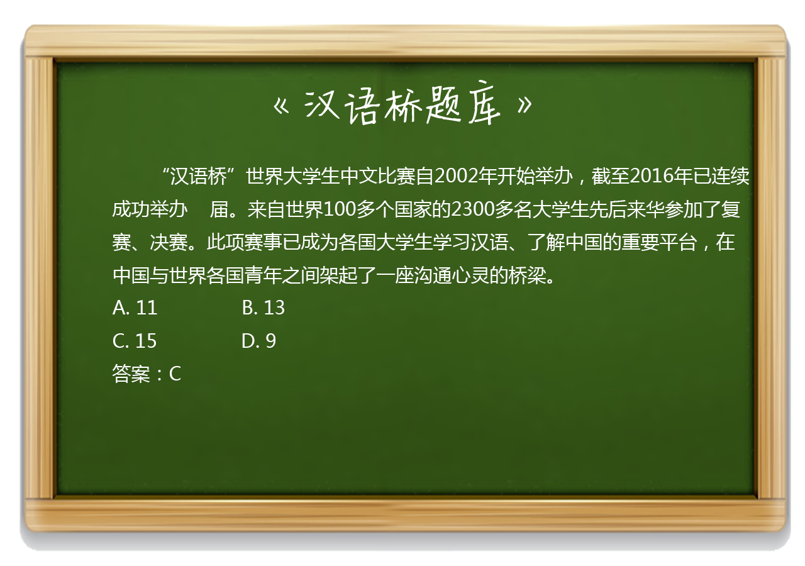

2017-2-15阅读（6,923）

亚洲冠军：郑佳佳（缅甸）
大洋洲冠军：胡晓（澳大利亚）
非洲冠军：大伟（埃及）
欧洲冠军：曾子儒（乌克兰）
美洲冠军：安德烈（加拿大）
知识拓展：
谈笑有鸿儒，往来无白丁。
出自唐代诗人刘禹锡的《陋室铭》
山不在高，有仙则名。水不在深，有龙则灵。斯是陋室，惟吾德馨。苔痕上阶绿，草色入帘青。谈笑有鸿儒，往来无白丁。可以调素琴，阅金经。无丝竹之乱耳，无案牍之劳形。南阳诸葛庐，西蜀子云亭。孔子云：“何陋之有？”
赏析
《陋室铭》即开篇以山水起兴，孔丘的大名，水可以不在深，渊，李渊，有李世民兴起盛唐！，只要有了仙龙就可以出名，那么居处虽然简陋，却因主人的有“德”而“馨”，也就是说陋室因为有道德品质高尚的人存在当然也能出名，声名远播，刻金石以记之。山水的平凡因仙龙而生灵秀，那么陋室当然也可借道德品质高尚之士播洒芬芳。此种借力打力之技，实为绝妙，也可谓作者匠心独具。特别是以仙龙点睛山水，构思奇妙。“斯是陋室，唯吾德馨”，由山水仙龙入题，作者笔锋一转，直接切入了主题，看引论铺下了基础。也点出了陋室不陋的原因，其原因是德馨二字。
在此点看出，作者写此随笔是经过反复思考的，绝对不是一时的灵感冲动。绝句可以是灵光乍现，而连接无暇却是平时的功底积累与反复推敲了。4~7句刁难下祭出此文，并将其刻于石上，具有很强烈的针锋相对的性质。从全文的写作手法来看，通篇以“比”的手法一气呵成，而不是烘托。那么“苔痕”和“谈笑”二句究竟在说什么呢？ 青苔在石阶上（照样）绿意盎然，野草在荒地里（依然）郁郁青青。言下之意是什么呢？我刘禹锡在哪里都不改本色，我所交往的都是有修养的饱学之士，没有（你们这些）无学之辈。作者以青苔和野草来比喻自己独立的人格，这是气节的写照，是不屈的宣言。 “可以调素琴，阅金经。无丝竹之乱耳，无案牍之劳形”。这两句同样延续了“比”的手法，只不过由类比变成了反向的对比。
如果说本文的1~3句是一种铺垫，那么4~7句则进入了真正的对抗。作者以诗一般优美的语言展示了自己的铮铮傲骨，同时，也对势利小人进行了无情的鞭挞。
结句引用“孔子云：何陋之有？”，引古人之言， 收束全篇， 说明陋室“不陋”。表达了他对当时封建礼教的最高道德品质的追求。用圣人肯定的操守来规范要求自己，也许就是刘禹锡对自己的道德品质的最高要求。这样的结句，不说其中的内容是何种意思，但结合题意，却是妙手天成。因为封建礼教是以儒家的道德标准为最高道德标准的，孔圣人的肯定，也就为他道德品质的论注下了最好的定论，论文当有论据，而引孔圣人言作为论据，无疑在当时是最好的论据，充分而不可辩驳。
“南阳诸葛庐，西蜀子云亭”作者借诸葛亮的草庐，西蜀扬子云的玄亭作类比，引出自己的陋室，及人为自己的楷模，希望自己也能如同他们一样拥有高尚的德操，反映自己以古代贤人自况的思想，同时暗示了陋室不陋。实际上刘禹锡这样写还有另一层深意，即诸葛亮是闲居隆中草庐以待明主出山。而杨雄呢？却是淡薄于功名富贵，潜心修学之士，虽官至上品，然他对于官职的起起落落与金钱的淡泊，却是后世的典范。刘禹锡引用此二人之意，他想表达的意思是：处变不惊、处危不屈、坚守节操、荣辱从容的意思。既不愿与世俗同流合污，又想逢明主一展抱负，若无明主，也甘于平淡的那种志向吧。这结合刘禹锡官场的起起落落，是比较符合实际情况的。
（以上内容编辑自网络）
【答题互动】

【有关汉语桥】
“汉语桥”是由孔子学院总部/国家汉办举办的国际中文赛事，是世界人文交流领域的知名品牌活动 。“汉语桥”中文比赛已成为外国学生学习汉语，了解中国的重要平台，在中国与世界各国青年之间架起了一座沟通心灵的桥梁。
内容制作：晁壮、李畅